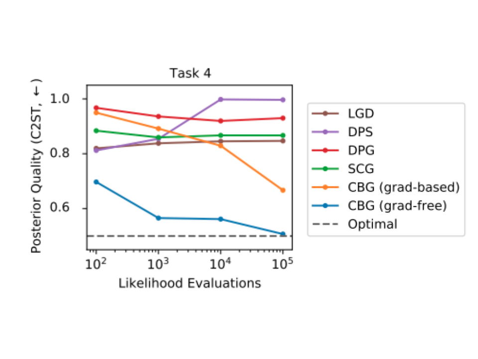

Bayesian Inference
On five Bayesian inverse-problem benchmarks with reference samples from the true posterior, CBG improves distributional accuracy as the likelihood-evaluation budget increases. Both gradient-free and gradient-based CBG move toward the optimal C2ST value, while other test-time guidance methods generally plateau because their diffused-likelihood approximations remain biased.
